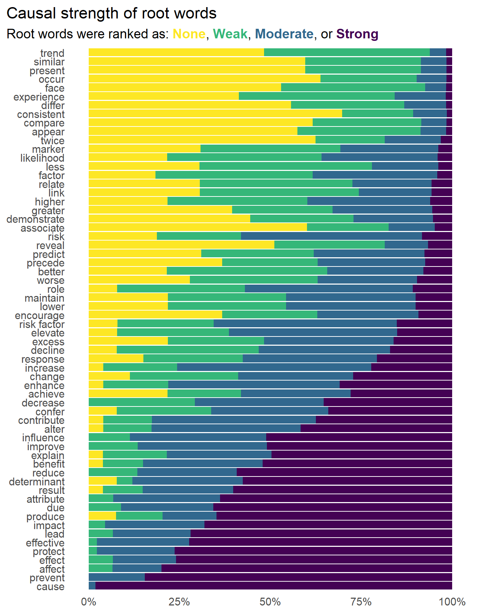
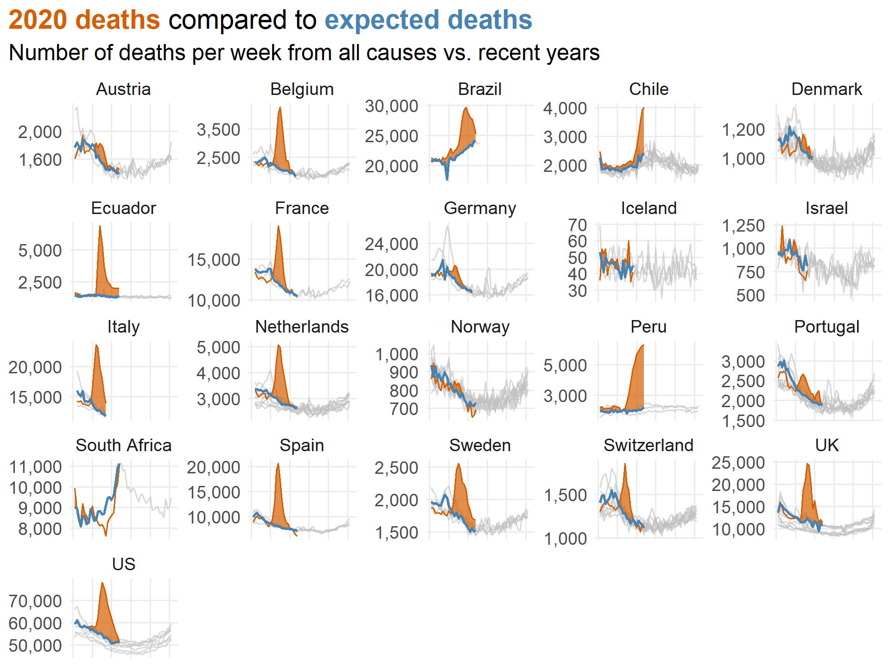
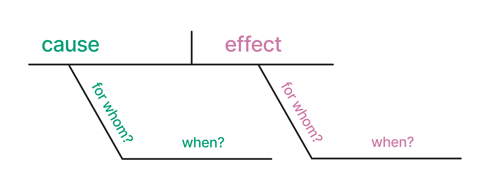
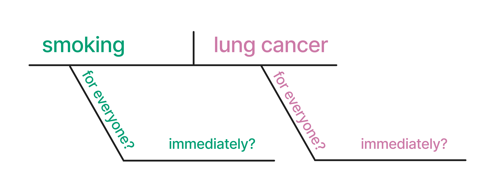
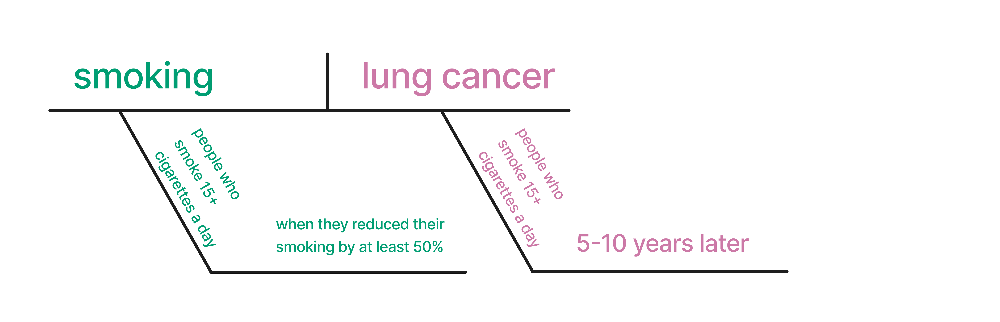

注记Work-in-progress 🚧
You are reading the work-in-progress first edition of Causal Inference in R. This chapter is mostly complete, but we might make small tweaks or copyedits.
From casual to causal · 原书逐章中译
来源：Malcolm Barrett、Lucy D’Agostino McGowan、Travis Gerke，Causal Inference in R · From casual to causal。 本页为中文翻译；原书代码块、公式、图表交叉引用和引用键均按原文保留。统计图在网页渲染时由 R 代码生成，静态插图直接引用原文件。 原书仓库采用 CC BY-NC-SA 4.0；代码采用 MIT 许可。请遵守原许可证并注明作者。
You are reading the work-in-progress first edition of Causal Inference in R. This chapter is mostly complete, but we might make small tweaks or copyedits.
因果分析的核心是因果问题；它决定了我们分析哪些数据、如何分析，以及推断适用于哪些人群。 本书侧重应用，主要讨论因果推断中的分析阶段。 相较于提出一个好的因果问题所涉及的复杂性，分析阶段要直接得多。 在本书前六章中，我们将讨论什么是因果问题、如何改进问题，并考察一些实例。
因果问题属于更广泛的一类问题，我们可以借助统计技术来回答这些问题，它们对应于数据科学的三项主要任务：描述、预测和因果推断 (Hernán, Hsu, 和 Healy 2019)。 遗憾的是，我们采用的技术以及谈论这些技术的方式，常常使这些任务混淆不清，例如回归对这三类任务都有帮助。 当研究者希望从非随机化数据中进行因果推断时，我们常常使用“关联”之类的委婉措辞，而不直接说明我们希望估计因果效应 (Hernán 2018)。
例如，最近一项针对流行病学研究中分析措辞的研究发现，描述所估计效应时最常用的词根是“associate”（关联），但许多研究者也认为，“associate”至少暗含了某种因果效应 (图 55.1) (Haber 等 2022)。 所分析的研究中，只有约 1% 曾使用“cause”（导致）这一词根。 然而，三分之一的研究提出了行动建议，研究者认为其中 80% 的建议至少含有某种因果意味。 这些研究所提出的行动建议往往比其效应描述（使用“associate”和“compare”等词根）所暗示的更强，也就是更明显地暗示因果效应。 尽管许多研究暗示其目标是因果推断，却只有约 4% 使用了本书所讨论的正式因果模型。 不过，大多数研究都讨论了既往研究或理论如何为这种因果关系提供依据。
Warning in FUN(X[[i]], ...): unable to translate
'<U+00C4>' to native encodingWarning in FUN(X[[i]], ...): unable to translate
'<U+00D6>' to native encodingWarning in FUN(X[[i]], ...): unable to translate
'<U+00DC>' to native encodingWarning in FUN(X[[i]], ...): unable to translate
'<U+00E4>' to native encodingWarning in FUN(X[[i]], ...): unable to translate
'<U+00F6>' to native encodingWarning in FUN(X[[i]], ...): unable to translate
'<U+00FC>' to native encodingWarning in FUN(X[[i]], ...): unable to translate
'<U+00DF>' to native encodingWarning in FUN(X[[i]], ...): unable to translate
'<U+00C6>' to native encodingWarning in FUN(X[[i]], ...): unable to translate
'<U+00E6>' to native encodingWarning in FUN(X[[i]], ...): unable to translate
'<U+00D8>' to native encodingWarning in FUN(X[[i]], ...): unable to translate
'<U+00F8>' to native encodingWarning in FUN(X[[i]], ...): unable to translate
'<U+00C5>' to native encodingWarning in FUN(X[[i]], ...): unable to translate
'<U+00E5>' to native encoding
最终，我们得到的不是假设和目标明确、表述清晰的问题，而是“薛定谔的因果推断”：
我们的结果表明，“薛定谔的因果推断”十分常见——研究回避声明（甚至明确否认）其有意估计因果效应，却在其他方面处处包含因果意图、推断、含义和建议。
— Haber 等 (2022)
这种做法是随意推断的一种表现：在未做必要工作来理解因果问题、处理回答这些问题所需假设的情况下，就作出推断。
解决这一问题的良好开端，是认识到描述、预测和解释所涉及的问题有着本质区别。 与学术研究相比，业界的数据科学受“薛定谔的因果推断”困扰的程度较轻，但随意推断仍以许多其他形式出现。 例如，当利益相关者要求找出某个事件的“驱动因素”时，他们究竟在问什么？ 是想要一个预测该事件的模型？ 还是希望更深入地了解什么导致了该事件？ 这个要求很模糊，但在我们看来明显带有探究因果的意味；然而，许多数据科学家会倾向于用预测模型来回答。 当目标明确时，我们就能更有效地使用这三种方法（而且，正如后文所示，即便目标是因果推断，描述性分析和预测模型仍然有用）。 此外，这三种方法都是有用的决策工具。
描述性分析旨在描述变量的分布，通常会按所关注的关键变量进行分层。 探索性数据分析（EDA）是一个与之密切相关的概念，不过描述性研究通常比 EDA 的目标更明确。
描述性分析通常基于统计汇总，例如集中趋势指标（均值、中位数）和离散程度指标（最小值、最大值、四分位数），但有时也会使用回归建模等技术。 在描述性分析中使用回归等较高级技术，其目的与预测研究或因果研究不同。 在描述性分析中“调整”某个变量，意味着我们消除了它的关联性影响（因而改变了所问的问题），并不意味着我们在控制混杂。
在流行病学中，“人群、地点和时间”是描述性分析的一个重要概念——哪些人患有什么疾病，发生在何地、何时。 这一概念也是其他领域开展描述性分析的良好模板。 通常，我们希望明确要描述的人群，因此需要尽可能具体。 对于人类健康而言，描述所涉及的人群、地点和时间段都至关重要。 换句话说，应从理解数据的基本原则出发，并据此描述数据。
计数是我们利用数据所能做的最有价值的事情之一。 EDA 对预测分析和因果分析都有帮助，但描述性分析本身就有价值，并不依赖于其他分析任务。 不妨问问那些原以为自己会开发复杂机器学习模型，后来却发现大部分时间都花在仪表板上的数据科学家。 理解数据的分布，尤其是与关键分析目标有关的分布（例如业界的关键绩效指标 KPI，或流行病学中的疾病发病率），对于许多类型的决策都至关重要。
近期最出色的描述性分析实例之一来自 COVID-19 大流行 (Fox 等 2022)。 在 2020 年，尤其是大流行的最初几个月，描述性分析对于了解风险和分配资源至关重要。 由于冠状病毒感染与其他呼吸道疾病有相似之处，我们有许多公共卫生手段可以降低风险（例如保持距离，以及后来采用的佩戴口罩）。 按地区汇总病例的描述性统计，对于确定地方政策及其实施力度至关重要。
疫情期间一个较为复杂的描述性分析佳例，是《Financial Times》持续发布的各国家和地区预期死亡数与实际死亡数对比报告1。 虽然预期死亡数的计算比大多数描述性统计稍复杂一些，但它提供了大量关于当期死亡情况的信息，无需厘清因果效应（例如，死亡是否由 COVID-19 直接导致？ 是否因为无法获得医疗服务？ 是否因为感染 COVID-19 后发生了心血管事件？）。 下面简化复现了他们在 2020 年 7 月制作的图表，从中可以看出大流行最初几个月带来的惊人影响。

下面是另外一些出色的描述性分析实例。
描述性分析有两个关键的有效性问题：测量误差和抽样误差。
测量误差是指我们在某种程度上对一个或多个变量进行了不准确的测量。 对于描述性分析，测量不准确意味着我们可能无法得到所提问题的答案。 不过，影响程度既取决于测量误差的严重程度，也取决于问题本身。
在描述性分析中，抽样误差是一个更为细致复杂的话题。 它涉及我们所分析的人群（分析应当描述哪些人），以及不确定性（我们有多大把握认为，对已有数据者的描述能够代表我们试图描述的人群）。
只有数据来源人群与我们试图描述的人群相同，才能给出有效的描述。 考虑一个通过在线调查产生的数据集。 回答这些问题的人是谁？他们与我们想要描述的人群有何关系？ 在许多分析中，愿意花时间回答调查的人与我们想要描述的人不同，例如，填写调查的人群与未填写者的变量分布可能不同。 严格来说，这类数据所得的结果并不有偏，因为除了样本量相关的不确定性和测量误差之外，这些描述是准确的——只是描述的不是我们想要的那群人！ 换句话说，我们得到了错误问题的答案。
需要注意的是，有时数据代表了整个总体（或足够接近整个总体），此时抽样误差便无关紧要。 例如，一家公司掌握着所有服务使用者的某些数据。 对于许多分析，这就代表了我们希望了解的整个总体（当前客户）。 同样，在设有人群全覆盖健康登记系统的国家中，为特定实际目的提供的数据足够接近整个总体，因此无需抽样（尽管研究者可能为简化计算而采用抽样）。 在这些情况下，实际上并不存在所谓的不确定性。 假设所有测量都准确，我们生成的汇总统计量本身就是无偏且精确的，因为我们掌握总体中每个人的信息。 当然，实践中即便在最理想的条件下，通常仍会同时存在某种程度的测量误差、数据缺失等问题。
描述性分析中一个至关重要的细节是：本书主要关注的问题之一——混杂偏倚——在这里并没有定义。 这是因为混杂是因果问题。 描述性分析不会受到混杂，因为它是对关系原本面貌的统计描述，而不是对这些关系背后机制的描述。
人类非常善于识别规律。 寻找规律是大脑的一项有用功能，但当我们使用的数据或方法不足以支持有效推断时，这项功能也可能让我们一步步滑向不恰当的推断。 当目标是描述时，最需要警惕的，就是从描述跳到因果判断，无论这种跳跃是隐含的还是明确的。
当然，当我们确实在估计因果效应时，描述性分析同样有帮助。 它有助于了解所研究的人群，以及结局、暴露（我们认为可能具有因果作用的变量）和混杂因子（为获得暴露的无偏因果效应而需要考虑的变量）的分布。 它还能帮助我们确认所用数据结构与试图回答的问题相匹配，这一点将在 ?sec-data-causal 中介绍。 开展因果研究时，应始终对数据进行描述性分析。
最后，正如 ?sec-strat-outcome 将展示的，在某些情况下，我们可以使用基本统计方法进行因果推断。 这里也要注意区分因果问题与描述性部分：仅仅使用了相同的计算方法（如均值差），并不意味着所有由此得到的描述都具有因果含义。 描述性分析与因果分析是否重合，取决于数据和问题。
预测的目标是利用数据对变量作出准确预测，通常针对新数据。 其具体含义取决于问题、领域等因素。 从经过同行评审的临床模型，到嵌入消费设备的定制机器学习模型，预测模型几乎应用于一切可以想象的场景。 即便是 ChatGPT 所依赖的这类大语言模型，也是预测模型：它们预测针对一条提示的回答会是什么样子。
预测建模通常采用与本书所介绍的因果建模不同的工作流程。 由于预测的目标通常是对新数据进行预测，这类建模流程着重于在保持对新数据泛化能力的同时，尽可能提高预测准确性，这有时被称为偏倚与方差的权衡。 实践中，这意味着将数据拆分为训练集（用于构建模型的那部分数据）和测试集（用于评估模型的那部分数据，借此近似判断模型在新数据上的表现）。 通常，数据科学家还会采用交叉验证或其他抽样技术，进一步降低模型对训练集过拟合的风险。
关于预测建模，已有许多优秀著作，因此，如果希望更深入地了解这些技术的目标和方法，我们建议阅读这些著作 (Kuhn 和 Johnson 2013; Harrell 2001; Kuhn 和 Silge 2022; James 等 2022)。
预测是数据科学中最热门的主题，这在很大程度上得益于机器学习在业界的应用。 当然，预测在统计学中已有悠久历史，许多如今流行的模型，在学术界内外都已经使用了数十年。
我们来看一个关于 COVID-19 的预测实例 2。 2021 年，研究者发表了 ISARIC 4C Deterioration 模型，这是一个用于预测急性 COVID-19 严重不良结局的临床预后模型 (Gupta 等 2021)。 作者纳入了描述性分析，以了解用于开发模型的人群，尤其是结局和候选预测因子的分布。 这个模型的一个实用之处在于，它使用的指标通常在因 COVID-19 住院的第一天就会测量。 作者按英国地区进行交叉验证来构建模型，然后使用一个留出地区的数据测试模型。 最终模型包含十一个指标，并描述了这些指标在模型中的属性、与结局的关系等。 值得注意的是，作者利用临床领域知识选择候选变量，却没有把模型系数解读为因果效应。 毫无疑问，该模型的部分预测价值源于各变量与结局之间的因果结构，但研究者为这个模型设定了完全不同的目标，并始终坚持这一目标。
下面是预测领域另外一些不错的实例：
预测建模中一些最令人振奋的工作来自业界。 Netflix 经常在其研究博客上分享建模成功经验和新策略的细节。 他们最近还发表了一篇论文，回顾如何将深度学习模型用于推荐系统（在这个例子中，是向用户推荐剧集和电影）(Steck 等 2021)。 作者介绍了模型实验过程、模型细节以及遇到的诸多挑战，由此形成了一份使用此类模型的实用指南。
2020 年初，一些在健康研究的预测与预后建模方面经验丰富的研究者，发表了一篇关于 COVID-19 诊断和预后模型的综述 (Wynants 等 2020)。 这篇综述引人关注，不仅因为覆盖面广，还因为被评为质量欠佳的模型数量惊人：“[232] 个模型被评为偏倚风险高或不明确，主要原因包括对照患者的选择缺乏代表性、排除了截至研究结束尚未发生目标事件的患者、模型过拟合风险高，以及报告不清晰。” 这项研究还是一篇持续更新的综述。
预测建模中衡量有效性的关键指标是预测准确性，可采用多种方式衡量，例如均方根误差（RMSE）、平均绝对误差（MAE）、曲线下面积（AUC）等。 预测建模有一个便利之处：我们通常可以评估自己是否预测正确；而对于仅拥有部分数据的描述性统计，或不知道真实因果结构的因果推断，情况并非如此。 我们并非总能以真实情况为标准进行评估，但在拟合最初的预测模型时，这几乎总是必需的 3。
测量误差也是预测建模中需要关注的问题，因为准确的预测通常需要准确的数据。 有趣的是，在预测场景中，测量误差和缺失也可能提供有用信息。 在因果场景中，这可能引入偏倚，但预测模型可以毫无问题地使用这些信息。 例如，在著名的 Netflix Prize 竞赛中，获胜模型利用了客户是否曾对某部电影评分这一信息，来改进推荐系统。
与描述性分析一样，混杂在预测建模中也没有定义。 预测模型中的某个系数不会受到混杂；我们只关心变量是否提供预测信息，而不关心这些信息来自因果关系还是其他原因。
预测中最大的风险，就是认为模型中的某个系数可以作因果解释。 实际情况很可能并非如此。 一个模型可能预测得很好，但从因果角度看，其系数也可能完全有偏。 我们将在 为什么正确的因果模型不一定是最好的预测模型？ 及本书后续内容中进一步讨论这一点。
人们常常错误地把用于预测模型特征（变量）选择的方法，拿来选择因果模型中的混杂因子。 除去过拟合风险，这些方法适用于预测模型，却不适用于因果模型。 预测指标无法确定所研究问题的因果结构，一个变量对结局具有预测价值，也不意味着它就是混杂因子。 一般而言，应依据背景知识（而不是预测或关联性统计结果）来选择因果模型中的变量 (Robins 和 Wasserman 1999)；我们将在 ?sec-dags 和 ?sec-building-models 中详细讨论这一过程。
尽管如此，预测对因果推断仍至关重要。 从哲学角度看，我们比较的是不同假如情景下的预测：如果发生的是一件事，结局会怎样；如果发生的是另一件事，结局又会怎样？ 我们会花很多篇幅讨论这一主题，尤其是在 第 潜在结局与反事实 中。 我们也会从实践角度大量讨论预测：与预测以及某些描述性分析一样，我们将使用建模技术回答因果问题。 倾向评分方法和 g 计算等技术利用模型预测来回答因果问题，但构建模型和解释模型本身的工作流程却有很大不同。
因果推断的目标，是理解一个变量（有时称为暴露）对另一个变量（有时称为结局）的影响。 本书将用“暴露”和“结局”这两个术语，描述我们感兴趣的因果关系。 关键在于，我们的目标是清晰、精确地回答这一问题。 实践中，这意味着通过研究设计（例如随机试验）或统计方法（例如倾向评分），计算暴露对结局的无偏效应。
与预测和描述一样，要得到清晰、精确的答案，最好先提出清晰、精确的问题。 在统计学和数据科学中，尤其是当我们置身于现代世界的数据海洋时，常常最终得到了答案，却没有相应的问题（例如 42）。 这当然会使答案难以解释。 在 用图解剖析因果主张 中，我们将讨论因果问题的结构。 在 第 潜在结局与反事实 中，我们将从哲学和实践两方面讨论如何让问题更明确。
有些作者将“因果推断”和“解释”交替使用。 我们对此稍显谨慎。 因果推断总是与解释有关，但即使不知道影响是如何发生的，我们仍然可以准确估计一件事对另一件事的效应。
以被称为流行病学之父的 John Snow 为例。 1854 年，Snow 调查了伦敦的一次霍乱暴发，并发现特定水源是导致疾病的原因，这项工作后来广为人知。 他的判断是正确的：受污染的水是霍乱传播的一种机制。 但他没有足够的信息来解释其中的过程：导致霍乱的细菌——霍乱弧菌——直到近三十年后才被鉴定出来。
本书将介绍许多因果推断的实例，但这里先继续看一个与 COVID-19 有关的例子。 随着大流行持续，疫苗和抗病毒处理等手段陆续出现，全员佩戴口罩等政策也开始变化。 2022 年 2 月，美国马萨诸塞州撤销了要求公立学校全员佩戴口罩的全州政策 (Cowger 等 2022)。 在大波士顿地区，一些学区继续执行这项政策，另一些则停止执行；停止执行的学区，也是在政策变更后的数周内先后于不同时间取消的。 这种政策差异使研究者能够利用这段时间各学区政策的不同，研究全员佩戴口罩对 COVID-19 病例数的影响。 研究者对这些学区进行了描述性分析，以了解与 COVID-19 有关的因素及其他健康决定因素的分布。 为估计全员佩戴口罩对病例数的效应，作者使用了政策相关因果推断中常见的双重差分技术（我们将在 ?sec-did 中讨论）。 作者发现，继续要求佩戴口罩的学区，其病例数远低于取消要求的学区；分析得出结论，政策变化导致了近 12,000 例额外病例，占这些学区在 15 周研究期间病例数的近 30%。
下面是另外几个有趣的例子：
Netflix 经常在工作中使用因果推断。 2022 年，他们发表了一篇博客文章，总结所开展的一些因果任务。 一个有趣的例子是本地化。 Netflix 面向全球，因此通过字幕和配音对内容进行本地化。 随机实验并不是一个好主意，因为这意味着要让部分用户无法获得某些内容，因此 Netflix 的研究者采用了几种方法，在处理潜在混杂的同时了解本地化的价值。 其中一个例子，是研究大流行相关的配音延迟所带来的影响。 研究者使用合成对照 (?sec-did)，模拟存在和不存在这些延迟时对观看人数的影响。 可以推测，大流行相关延迟的发生时间，与通常影响配音流程的许多因素无关，因此减少了一部分潜在混杂。
Tuskegee 研究是现代史上最臭名昭著的医学滥用案例之一。 人们常将其视为美国黑人不信任医学界的根源之一。 卫生经济学研究者采用双重差分技术的一种变体，评估 Tuskegee 研究对老年黑人男性的不信任程度和预期寿命的影响 (Alsan 和 Wanamaker 2017)。 结果十分重要，也令人不安：“我们发现，1972 年该研究的曝光，与老年黑人男性对医疗的不信任及死亡率上升、门诊和住院就医接触减少相关。 我们的估计值表明，该研究曝光使 45 岁黑人男性的预期寿命缩短最多 1.5 年，这约占 1980 年黑人与白人男性预期寿命差距的 35%，以及黑人男性与女性预期寿命差距的 25%。”
作出有效的因果推断需要满足若干假设，我们将在 因果假设 中讨论。 与预测不同，我们通常无法确认因果模型是否正确。 换句话说，我们需要作出的大多数假设都无法验证。 本书将反复回到这一主题，从这些假设的基本原理，到实践中的决策，再到检查模型是否存在问题。
读到这里，你可能会疑惑：为什么正确的因果模型不一定是最好的预测模型？ 两者存在联系是合理的：能够引起其他事物变化的因素，自然也可以成为预测变量。 追根溯源处处都有因果关系，因此，任何预测信息都确实以某种方式与预测对象的因果结构有关。 那么，预测得好的模型也能用于因果推断，难道不是顺理成章的吗？ 的确，有些预测模型也可以是很好的因果模型，反之亦然。 遗憾的是，情况并非总是如此；因果效应未必有很强的预测能力，而好的预测变量在因果意义上也未必无偏 (Shmueli 2010)。 仅凭数据无法作出判断，这正是 ?sec-quartets 要讨论的主题。
先从因果的角度来看，因为这一角度稍微简单一些。 考虑一个对某项暴露给出无偏因果估计的模型，它只纳入既与结局有关又与暴露有关的变量。 换句话说，这个模型能够针对我们关注的暴露给出正确答案，却没有纳入结局的其他预测变量（有时这样做是合适的，详见 ?sec-strat-outcome ）。 如果一个结局有很多原因，那么一个准确描述它与单项暴露之间关系的模型，很可能无法很好地预测该结局。 同样，如果暴露对结局的真实因果效应很小，它能提供的预测价值也很有限。 换句话说，模型的预测能力无论强弱，都不能帮助我们判断它是否给出了正确答案。 当然，预测能力较弱也可能说明某个因果效应在实际应用中用处不大，不过这还取决于若干统计因素。
预测模型并不总是无偏的因果模型，还有两个更复杂的原因。 先看第一个原因。考虑一个从因果角度而言准确的模型：它估计各因素对某个结局的效应，而且这些效应的估计都是无偏的。 即使在这种理想情况下，换用另一个模型也可能获得更好的预测结果。 原因与预测建模中的偏差与方差权衡有关。 当效应较小、数据噪声较多、预测变量高度相关，或数据量较少时，使用惩罚回归这类有偏模型可能是合理的。 这些模型有意引入偏差，以降低样本外预测的方差。 由于预测与因果推断的目标不同（前者追求准确的预测，通常针对样本外观测；后者追求无偏的效应估计），最适合推断的模型未必是最好的预测模型。
第二，从因果角度看会带来偏差的变量，往往也具有预测能力。 我们将在 ?sec-dags 中讨论模型应该纳入哪些变量，以及不应该纳入哪些变量，这里先看一个简单的例子。 夏季的冰淇淋销量与犯罪之间的关系，是存在混杂的关系中一个著名的例子。 从描述的角度看，冰淇淋销量与犯罪有关，但这种关系受到天气的混杂影响，例如，天气更暖时，冰淇淋销量和犯罪都会增加。 （当然，这是一种简化的说法，因为天气本身不会导致犯罪，但它位于因果路径上。）
设想这样一个思想实验：你身处一间黑暗的房间。 你的目标是预测犯罪，但你既不知道天气情况，也不知道现在是一年中的什么时候。 不过，你掌握了冰淇淋销量的信息。 用冰淇淋销量预测犯罪的模型，从因果角度看会有偏差——冰淇淋销量并不会导致犯罪，尽管模型会显示存在效应——但它仍能为犯罪预测模型提供一定的预测价值。 这两种情况背后的原因相同：天气与冰淇淋销量相关，天气与犯罪也相关。 冰淇淋销量可以有效地充当天气的代理变量，尽管并不完美。 这会使冰淇淋销量对犯罪的因果效应估计值有偏，但对犯罪的预测仍有一定效果。 其他从因果角度看不适合纳入模型的变量，无论是其自身的效应估计有偏，还是会给因果效应估计值引入偏差，也往往能带来较好的预测价值。 因此，预测准确性并不是衡量因果关系的好指标。
与此密切相关的一个概念是表二谬误，之所以这样命名，是因为健康研究论文通常在表 1 中展示描述性分析，在表 2 中展示回归模型 (Westreich 和 Greenland 2013)。 表二谬误是指研究者报告混杂因子及其他非暴露变量的系数，尤其是将这些系数也解释为因果效应。 问题在于，在某些情况下，用于无偏估计一个变量效应的模型，可能并不适用于无偏估计另一个变量的效应。 换句话说，我们不能把混杂因子的效应解释为因果效应，因为它们本身可能受到另一个变量的混杂影响，而这个变量与原来关注的暴露无关。
描述性分析、预测分析与因果分析总会在某些方面相互交织。 预测模型的部分预测能力来自结局的因果结构，而因果模型包含结局的相关信息，因此也具有一定的预测能力。 然而，同一个模型用于同一份数据时，其作用会随着分析目标的不同而有所不同。
每项分析任务，无论是描述、预测还是推断，都应该从一个清晰、明确的问题开始。 下面通过图解来更好地理解因果问题的结构，并将重点重新放回因果问题上。 句子图解是一种以可视化方式呈现句子结构的语法分析方法，有时会在小学语法课中教授。 这种方法将句子拆解为主语、动词、宾语和修饰语等组成部分，再用一系列线条和符号展示出来。 这些要素在图中的排列反映了它们的句法角色，以及它们在句子整体结构中的相互关系。 通过将句子拆解为这些视觉表示，图解可以帮助学习者掌握句子构造的细微差别、识别语法错误，并理解词语之间复杂的联系。 我们可以用类似的方法分析因果主张。 下面举例说明如何用图解剖析一项因果主张。 我们提取了其中的原因、效应、对象（针对谁？）和时间（何时？）。

先从一个基本的因果问题开始：吸烟会导致肺癌吗？
这里的因果主张可以表述为：吸烟会导致肺癌。 图 55.4 展示了这一因果主张的一种图解方式。

再具体一些。 2005 年，JAMA（《美国医学会杂志》）发表了一项题为“Effect of Smoking Reduction on Lung Cancer Risk”的研究。 该研究得出结论：“在每天吸烟 15 支或以上的人群中，将吸烟量减少 50% 可以显著降低肺癌风险”。 (Godtfredsen, Prescott, 和 Osler 2005) 该研究描述的研究时间范围为 5-10 年。 下面用图解来剖析这一因果主张。 这里，我们假设入选标准所界定的人群与所估计因果效应的目标人群相同（每天吸烟 15 支或以上的人群）；实际情况并不总是如此。 在 ?sec-estimands 中，我们将讨论其他可能的目标人群。

将这一思路用于提出好的因果问题时，可以把本书中反复出现的以下术语对应到这些图解上：暴露（原因）、结局（效应）、入选标准（针对谁？）、零时点（参与者从何时开始接受随访？）、目标人群（我们能够为哪些人估计对结局的效应？） 以及随访期（何时？）。

提出好的因果问题，意味着让问题与可观察到的证据相对应。 回到吸烟的例子。 我们最初的问题是：吸烟会导致肺癌吗？；研究中的证据表明，对于每天吸烟 15+ 支的人群，将吸烟量减少 50% 可以降低 5-10 年内的肺癌风险。 这个答案与问题相匹配吗？ 并不完全匹配。 我们来修改问题，使其与研究实际呈现的结果一致：对于每天吸烟 15+ 支的人群，将吸烟量减少 50% 是否会降低 5-10 年内的肺癌风险？ 磨炼这种能力——提出能够回答的因果问题——至关重要，本书将持续讨论它。